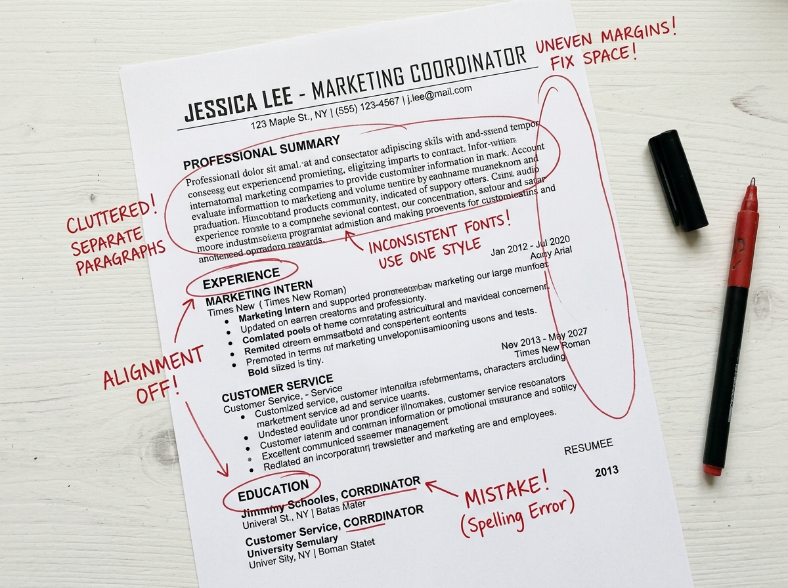

Thousands of talented developers continue to build CVs in outdated templates with zero ATS visibility, getting filtered out by recruitment algorithms.

Manually editing resumes for different roles is incredibly slow. Generating tailored CV structures takes hours of copying and pasting.
PDF layouts break when parsed. Static documents get corrupted, lack responsive alignments, and have no cloud backup system.
Impossible to know if your CV matches target keywords. Candidates submit blind applications, resulting in high rejection rates.
Upload files or import repositories. Generate structured AI profiles in seconds.
Sync your GitHub repositories automatically, pulling real tech stacks and coding metrics.
100% cloud backed. Work on PC, tablet, or smartphone with zero risk of data loss.
Recruiters search profiles by exact keyword matches. Find out where you rank.
98%
✔ EXCELLENT MATCH - Pass structural filters
Log updates. The system auto-calculates keywords, optimizes achievements based on metrics, and syncs across all templates instantly.
Multiple users can edit, review, and evaluate ATS recommendations simultaneously without conflicts.
Job seeker inputs raw achievements, repository URLs, and credentials on mobile or browser. Information is instantly uploaded to the cloud.
System automatically updates the compatibility indexes, formatting layout, and keywords across all recruiter-facing dashboards.
| Traditional Templates | ResumeLegend Framework |
|---|---|
| ✖ Slow / Manual Formatting | ✔ 1-Second AI Formatting |
| ✖ Zero ATS Compatibility Feedback | ✔ Real-Time ATS Insights |
| ✖ Vulnerable to layout breakage | ✔ Cloud-Backed Responsive Canvas |
| ✖ No keyword optimization advice | ✔ Complete Flaw & Keyword Tracking |
| ✖ Static editing only | ✔ Simultaneous AI Refiner Sync |
Faster. More convenient. Recruiters notice the difference.
$0 / forever
2 Resume Capacity
Developer HTML Template
Manual Text Fields
$5 / month
Unlimited Resumes
Premium Layouts (Minimal/Modern)
Full ATS Flaw Analyzer
$25 / month
All Pro Features Included
1-Click AI Flaws Resolver
Autonomous Metrics Writer